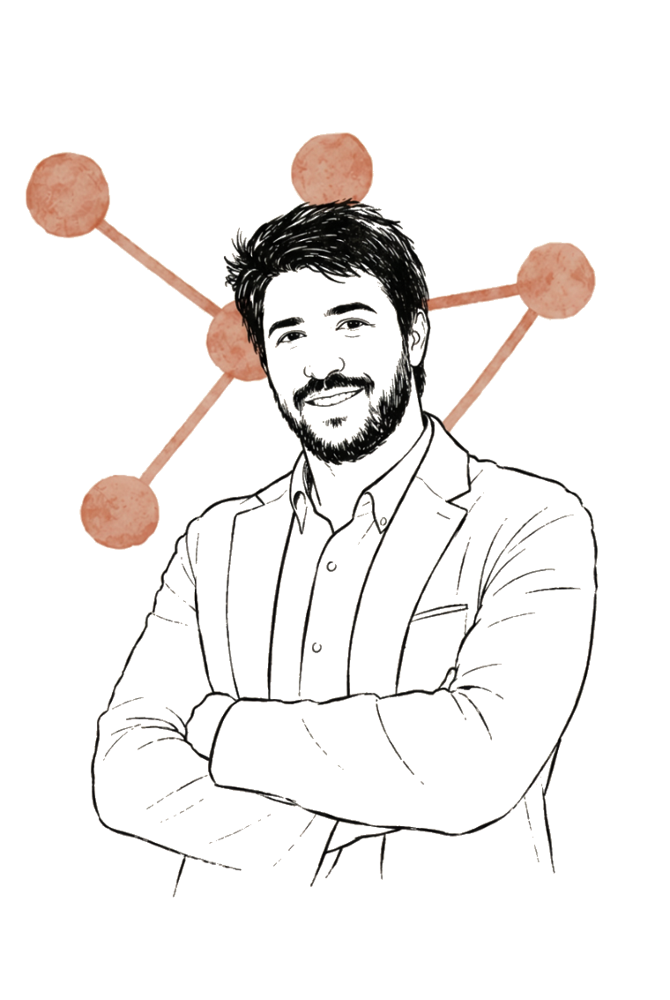

Après 10+ ans à concevoir et animer des formations pour des professionnels en entreprise, j’accompagne aujourd’hui les organisations dans leurs enjeux de compétences, d’adoption et de performance en intégrant l’IA dans des solutions concrètes et opérationnelles.
Accompagnement d’équipes métier, Learning et de sponsors sur des enjeux de performance.
10 ans d’expérience en formation et ingénierie pédagogique.
Trois solutions IA conçues et déployées dans des contextes opérationnels.
Collaboration avec des équipes internationales, dans 10 pays et 10 langues.